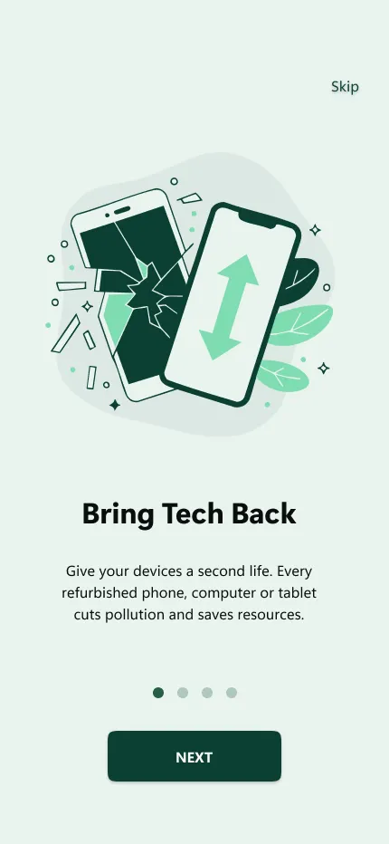
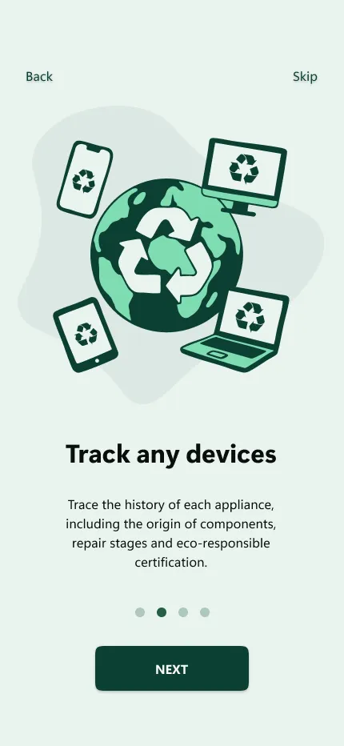
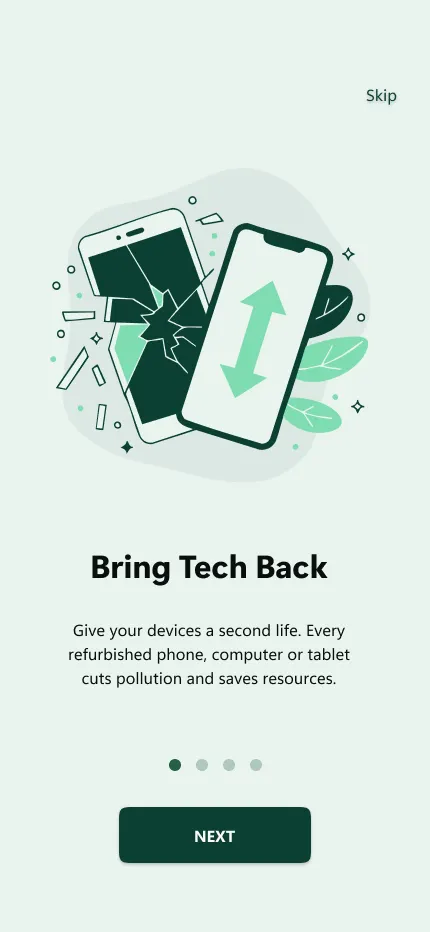
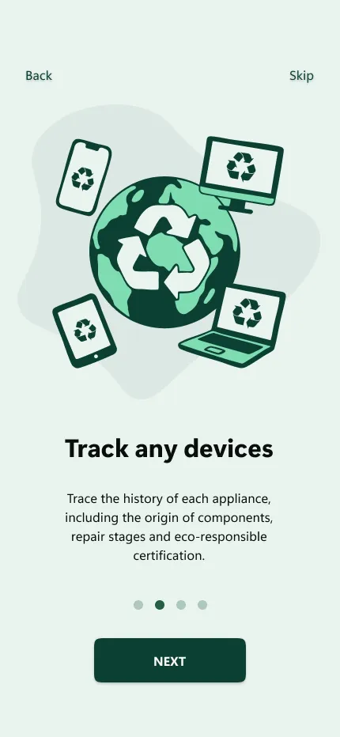
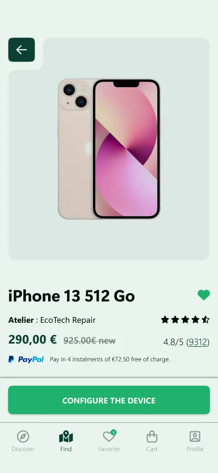
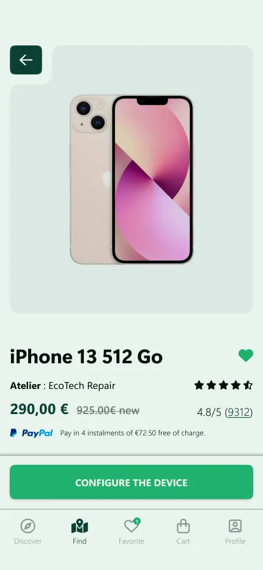
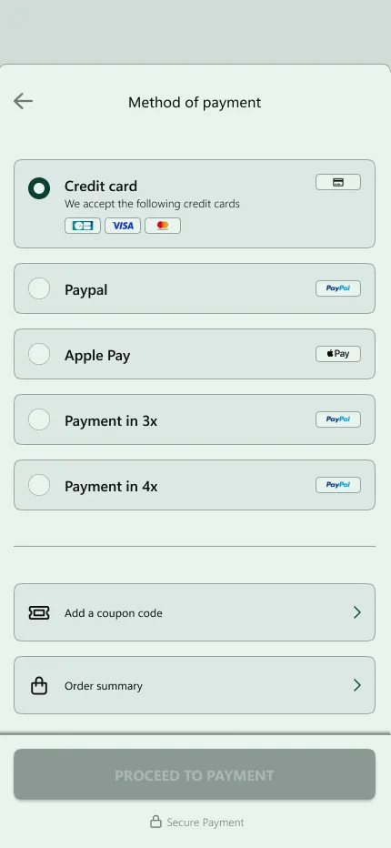
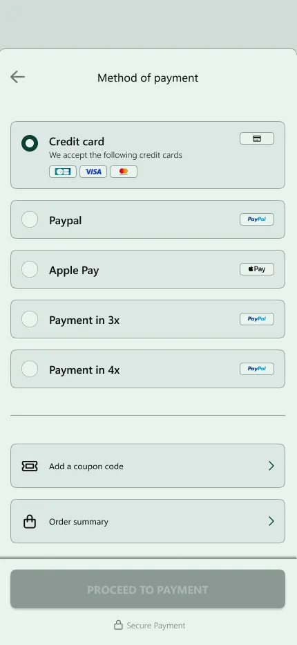

J'ai designé une app écoresponsable en 1 semaine chrono

Le reconditionné souffre d'une image "low cost" et la livraison à distance annule une partie de l'impact écologique positif.
Carte de proximité + retrait local. L'utilisateur achète un device reconditionné dans un atelier à proximité et le récupère comme un point relais. Réduction des émissions CO₂.
1 semaine, tout seul : Logo, DA complète, illustrations générées par IA puis vectorisées, prototypage Light/Dark. Sprint complet de A à Z.
Le reconditionné, c'est bien pour la planète. Mais si tu livres un iPhone reconditionné depuis Paris jusqu'à Marseille, tu annules une partie de l'impact écologique. Le vrai problème n'est pas juste le recyclage, c'est la logistique.
J'ai eu 1 semaine pour prouver qu'on pouvait faire autrement. Résultat : une app complète (Logo, DA, Illustrations IA, Prototypage Light/Dark) qui transforme le reconditionné en achat local et écoresponsable.
Timeline du projet (7 jours)
Discovery & Research
Analyse concurrentielle, insights utilisateurs, identification des blocages clés.
UX Strategy & Wireframes
Architecture de l'information, flows optimisés, wireframes structurels.
UI Design & Prototyping
Design System "Eco-Tech", composants scalables, prototype interactif.
Testing & Hand-off
Tests utilisateurs, itérations, documentation pour le développement.
Le Paradoxe du Reconditionné
Acheter un iPhone reconditionné pour "sauver la planète", puis le faire livrer depuis l'autre bout de la France, c'est contradictoire. La logistique longue distance annule une partie de l'impact positif.
La Solution : Proximité
Carte interactive + Retrait local. L'utilisateur voit les ateliers à côté de chez lui, achète le device, et le récupère comme un point relais. Résultat : zéro km inutile, impact écologique réel.
Research & Insights
L'analyse concurrentielle et les entretiens utilisateurs ont révélé trois frictions majeures qui structurent la stratégie produit.
1. Logistique Contradictoire
Livrer un produit "vert" depuis 500 km annule 30% de l'impact positif. Les utilisateurs le savent.
2. Besoin de Proximité
Les gens préfèrent acheter local. C'est plus rapide, plus sûr, et ça soutient l'économie locale.
3. Confiance par le Contact
Voir l'atelier sur une carte, connaître la distance, récupérer en main propre = confiance maximale.
Stratégie : Confiance par la preuve
Trois principes directeurs transforment les faiblesses du marché en forces différenciantes : standardisation visuelle, traçabilité explicite, et design précis.
Standardisation Visuelle
Langage universel (Grade A/B/C) pour rendre la comparaison instantanée.
Traçabilité "Front-Center"
Afficher défauts et historique comme preuves de qualité, pas comme freins.
Design "Précis & Humain"
Précision technique (confiance) + chaleur écologique (désirabilité).
User Flow & Navigation
Le parcours a été restructuré pour réduire le temps de décision et guider l'utilisateur étape par étape. La phase de personnalisation a été repensée pour être plus pédagogique et moins technique.
Site Map : structure du parcours utilisateur.
Direction Artistique
Le design system assure scalabilité, cohérence et rapidité d'exécution. Le vert (Forest Green) ancre la durabilité, les gris froids garantissent la lisibilité technique.
Typographie
Palette de couleurs
Composants
Composants atomiques pour une scalabilité rapide
Illustrations AI-assistées
Les illustrations ont été créées avec Ideogram (génération IA), puis vectorisées dans Illustrator pour garantir une compatibilité parfaite avec les modes light et dark. L'IA accélère l'exploration visuelle, la vectorisation assure la qualité et la flexibilité.
Onboarding et authentification : créer une première impression rassurante.
Concept "Bring Tech Back" : redonner vie aux appareils usés.
Impact global : traçabilité et écoresponsabilité au cœur du produit.
Carte de proximité : trouver et réserver un atelier local en un clic.
Dashboard d'impact : visualiser les ressources économisées (CO₂, eau, déchets).
Livraison locale : zéro km inutile, impact écologique réel.
Solution & justification UX
Chaque écran maximise la clarté et rassure à chaque micro-interaction. La hiérarchie visuelle guide naturellement vers la conversion.
 





Onboarding & Inscription
Proposition de valeur immédiate (Économie + Écologie) pour réduire le rebond. Bénéfices concrets du reconditionné dès le premier lancement.


 


Recherche & Fiche Produit
Carte interactive des ateliers, filtres intelligents, fiches produit détaillées. Transparence sur l'état et l'historique pour rassurer.
 


Tunnel d'Achat & Confirmation
Panier optimisé, livraison claire, paiement sécurisé, impact écologique visualisé. Chaque étape renforce la confiance.
Impact & apprentissages
Sprint 1 Semaine
App complète livrée seul en 7 jours (Logo, DA, Illustrations IA, Proto). Preuve de vélocité extrême.
Clarté perçue
Standardisation des fiches produit = temps de décision réduit drastiquement.
Scalabilité
Design System atomique = nouvelles catégories déployées rapidement.
"1 semaine pour designer une app complète de A à Z, tout seul. Preuve qu'avec les bons outils (IA pour les illustrations) et une vision claire (proximité = impact réel), on peut livrer vite sans sacrifier la qualité."